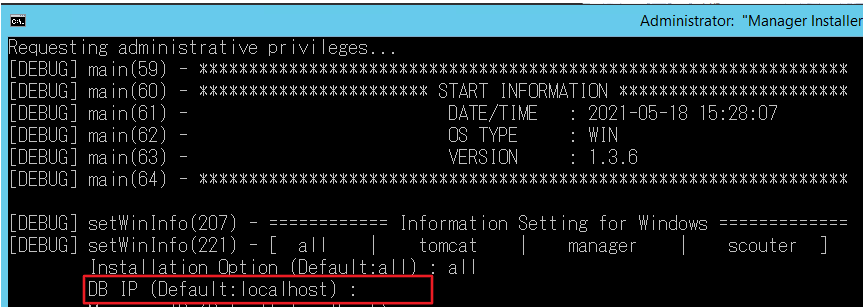
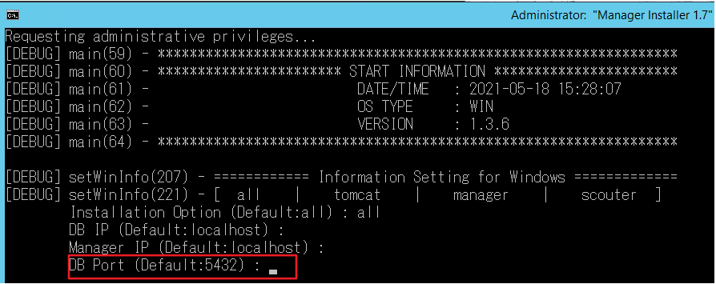
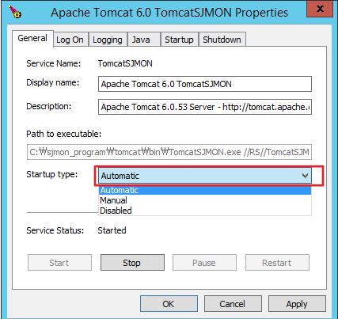
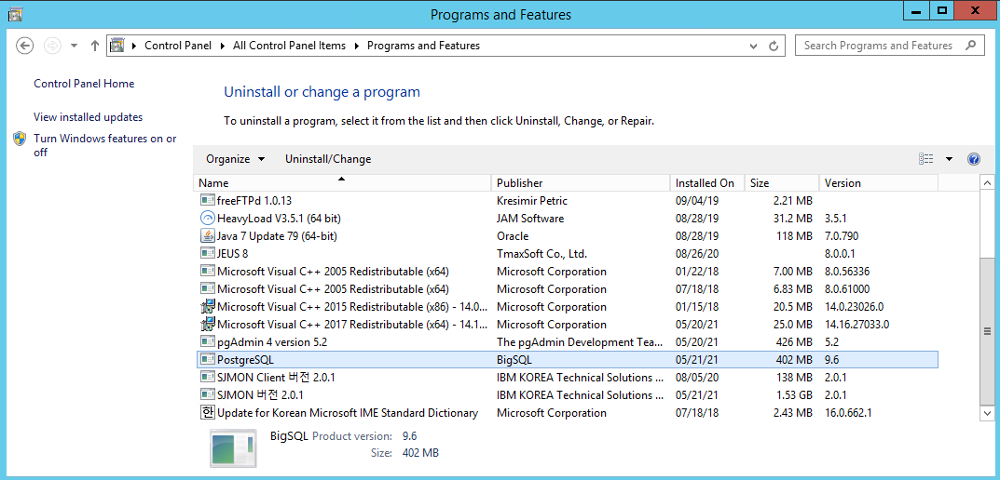

SJMON Program Installation on Windows
1. Windows에 SJMON 설치
1.1) PC 또는 서버에 Java가 설치되어 있는지 확인
- Java 설치 여부 확인하기
cmd실행 -> java -version 명령어를 입력하여 확인합니다.
- Java가 설치되어 있지 않은 경우
아래 Site에서 Java를 설치합니다. (https://java.com/ko/download/)
- Java 환경변수 설정
Java를 설치했거나 설치되어 있는 경우,
C:\Program Files\Java에 jre가 있는지 확인합니다.
설치가 되어 있는 것을 확인한 뒤에, "내 컴퓨터(우클릭)” -> “속성” -> “고급 시스템 설정” -> “환경변수”를 클릭해서 JRE_HOME을 추가합니다.
- 시스템 변수에서 새로 만들기 클릭
환경변수 설정이 완료되면 아래 명령을 cmd창에서 수행하여 JRE_HOME이 정상적으로 설정되었는지 확인합니다. (echo %JRE_HOME%)
1.2) 연결할 포트 열려 있는지 확인
Viewer에서 사용할 9090 포트와, Manager-Client 통신에 사용할 43001 포트, FTP 연결에 사용할 21 포트가 사용 가능한지 방화벽 설정을 확인합니다.
설정해야 하는 경우, “인바운드 규칙” 의 “새 규칙”을 통해 해당 포트를 허용해야 합니다.
1.3) SJMON-Manager-Setup.exe 실행해서 SJMON 파일 설치
SJMON-Manager-Setup-xxxxxx.exe 파일을 원하는 위치에 다운로드합니다.
설치를 시작하기 전에는 현재 설치를 진행하고 있는 Machine(PC or Server)가 인터넷 망에 연결되어 있어야 합니다. (관리 툴을 자동으로 다운받는 절차에 필요)
(PostgreSQL관련 troubleshooting과 관련된 자세한 사항은 아래 site에서 확인이 가능합니다. https://wiki.postgresql.org/wiki/Troubleshooting_Installation)
a) 설치 위치 선택합니다. (ex.D:\sjmon_program)
b) 설치 준비 완료 확인 후 “설치”버튼을 눌러 설치를 진행합니다.
c) 설치 중 화면
d) 설치 완료 확인 후 추가적으로 SJMON 프로그램의 설치를 “종료”버튼을 눌러 계속 진행합니다.
1.4) PostgreSQL Database Installation
- PostgreSQL Setup
PostgreSQL 설치경로 입력합니다.
Select component에서 PostgreSQL Database Server만 체크된 상태에서 Next 합니다.
Setup PostgreSQL password -> 원하는 Password를 입력하고 기억해 둡니다. (ex. postgres)
Summary를 확인하고 next를 누르면 설치가 시작됩니다.
PostgreSQL이 성공적으로 설치되면 완료 화면이 나타납니다.

PostgreSQL이 설치된 경로 및 *.sql 파일을 포함하고 있는 경로 입력합니다.
SJMON Program이 설치된 경로 아래 postgre_installer 디렉터리 (ex. D:\sjmon_program\postgre_installer)
PostgreSQL이 설치된 경로 SJMON Program이 설치된 경로
1.5) [WINDOWS] Windows FTP 서비스 설치
Windows에 sjmon manager를 설치한 경우 Client에 Agent를 자동으로 설치하기 위해서는 FTP 서비스를 시작해야 합니다.
(SJMON 설치 시 제공되는 FileZila를 사용해도 되고 별도의 FTP 서비스를 사용해도 됩니다.)
Next 버튼을 클릭하여 진행합니다.
설치를 원하는 경로를 입력하고 Next 버튼을 클릭합니다.
Windows와 연결될 Port를 넣고 Next 버튼을 클릭합니다.

FileZilla Server를 사용할 User를 선택한 뒤 Next버튼을 클릭합니다.
설치 완료 화면
프로그램 실행 후 IP address, Port 그리고 원하는 password정보를 입력합니다.
프로그램 설치 후 Edit > Users 를 클릭합니다.
우측 Users 의 Add 버튼을 클릭하여 sjmonv2user를 생성합니다.

Password 체크박스를 Enable 한 후 비밀번호를 입력합니다. (default : zaq12wsx)
그리고 Shared folders에서 Add버튼을 클릭하여 sjmon program이 설치되어 있는 경로를 선택합니다.
Shared folders 의 Directores 와 Users 확인 후 OK 를 클릭하여 작업을 완료합니다.
1.6) [WINDOWS] Tomcat Service 프로그램 설치
- Tomcat Service 설치 시작
License Agreement 동의 후 진행합니다.
설치할 Components 선택합니다.
HTTP/1.1 Connector Port 및 Windows Service Name 설정합니다. (권장 Port : 9090)
Java 설치 위치 설정합니다.
SJMON설치위치\tomcat 로 설치할 위치 설정합니다.
-
Default로 제공되는 경로를 지우고 SJMON이 설치된 경로에 tomcat디렉터리를 붙여 입력합니다.
SJMON tomcat 설정을 저장여부를 물어보면 확인을 클릭합니다.
설치 완료 시 체크 모두 해제 후 Finish 합니다.
1.7) [WINDOWS] SJMON Manager Program 설치
Manager Installer가 실행되면 엔터 혹은 all을 입력하여 설치를 진행합니다.
DB IP는 Default는 localhost값이 입력되어 있고 수정을 원하는 경우 수정할 IP Address를 입력한 뒤 Enter를 누릅니다.

Manager IP는 Default로 직전에 입력한 DB IP 값이 입력되어 있고, 수정을 원하는 경우 수정할 IP Address를 입력한 뒤 Enter를 누릅니다.
DB Port는 Default로 5432 값이 입력되어 있고 수정을 원하는 경우 수정할 Port를 입력한 뒤 Enter를 누릅니다.

Manager Port는 Default로 43001~43005가 입력되어 있고, 수정을 원하는 경우 수정할 Port를 입력한 뒤 Enter를 누릅니다.
Customer Name은 SSR Trial Version의 경우 License발급 요청 시 사용한 Notes의 Short Name을 입력하고, 고객 Trial이나 고객의 정식 버전의 경우는 License발급 요청 시 작성한 고객사명을 입력합니다. (한글이나 띄어쓰기 상관없음)

설치를 진행하고 TomcatSJMON과 SjmonManager 서비스가 잘 시작되었다는 message 출력 확인합니다.

Manager 설치 완료 후, Scouter 설치 여부를 결정합니다.
Default는 n이며, y를 입력 시 Scouter 설치를 진행하고 n을 입력 시 설치 없이 종료됩니다.


1.8) SJMON Program이 정상적으로 설치되었는지 확인
- SJMON Manager 구동 확인
Windows 작업 관리자 실행(Ctrl+Alt+Del) -> 작업 관리자 시작 -> 서비스 Tab에서 SjmonManager서비스가 정상적으로 실행 중인지 확인합니다.
- Manager가 실행이 안되고 중지된 상태인 경우
SJMON Manager 프로그램의 기본 로그 위치는 SJMON_Program이 설치된 위치\manager\logs입니다.
Manager가 정상적으로 실행이 안되는 경우 아래 로그파일을 열어 log type에 따라 조치를 진행하시면 됩니다.
Commons-daemon-date 로그파일과 application 로그파일이 존재합니다.
-
commons-deamon-date 로그 : SJMON manager 서비스가 등록될 때 발생하는 오류
1) 지정된 경로를 찾을 수 없습니다.”라는 오류가 발생하는 경우
Java가 설치되어 있는 경로에서 (ex.
C:\Program Files (x86)\Java\jre1.8.0_131/bin) server 또는 client라고 되어있는 디렉터리를 확인한 뒤에 manager 디렉터리로 이동하여 addServicexx.bat 파일을 열어서 JVM 설정 경로를 jvm.dll 파일 위치로 수정합니다. -
application 로그 : SJMON manager가 구동되면서 발생하는 오류
- application 로그 파일 Error 종류
1) [9001] Problem of license is null
License 값을 입력하는 부분이 “null”로 입력되어 발생한 문제입니다. SJMON이 설치된 곳에 manager디렉터리로 이동하여 config.properties파일을 열어 “server.license”부분에 값이 정상으로 입력되었는지 확인이 필요합니다.
2) [9002] Problem of customer number is null
Customer name 값을 입력하는 부분이 “null”로 입력되어 발생한 문제입니다. SJMON이 설치된 곳에 manager디렉터리로 이동하여 config.properties파일을 열어 “server.cust.name”부분에 값이 정상으로 입력되었는지 확인이 필요합니다.
3) [9003] Problem of customer name check
Customer name 값을 입력하는 부분이 잘못 입력되어 발생한 문제입니다. SJMON이 설치된 곳에 manager디렉터리로 이동하여 config.properties파일을 열어 “server.cust.name”부분에 값이 정상으로 입력되었는지 확인이 필요합니다. (license발급시 사용한 customer name이 입력되어야 합니다)
4) [9004] Problem of UUID or MAC address check
License 값을 정상적으로 인식되지 않아서 발생한 문제입니다. SJMON이 설치된 곳에 manager디렉터리로 이동하여 config.properties파일을 열어 “server.license”부분에 값이 정상으로 입력되었는지 확인이 필요합니다. (license발급시 제공한 license key확인)
5) [9005] Problem of agent registration
등록한 License 대비 연결된 Agent 수가 초과되어 신규 Agent연결이 안되는 상황입니다. 구매한 License에 맞게 Agent 대수를 조절하시거나 신규로 License를 구매해야 해결할 수 있습니다.
6) [9006] Problem of license expiration
발급된 license가 만료되어 발생한 문제입니다. sjlyh@kr.ibm.com으로 문의해서 조치를 받으시기 바랍니다.
- SJMON Tomcat 구동 확인
Windows 작업 관리자 실행(Ctrl+Alt+Del) -> 작업 관리자 시작 -> 서비스 Tab에서 TomcatSJMON이 정상적으로 실행 중인지 확인합니다.
1.9) Repository 파일 구성
SJMON Manager를 설치한 경로에 sjmon_file디렉터리로 이동하여 파일이 정상적으로 upload되었는지 확인합니다
| Repository File List | 설명 |
|---|---|
| COMMON | SJMON Agent 설치 시 필요한 common 파일 |
| Installer | Agent 사용 시 사용되는 Auto Installer 파일 |
| INVENTORY | Version Check 기능에 사용되는 기본 파일 |
| OS | Agent 사용 시 사용되는 OS 관련 파일 |
| pm_script | Auto PM 기능 사용 시 사용되는 기본 PM Script 파일 |
SJMON 설치가 완료되었습니다. 이제 Web으로 SJMON에 접속하여 정상적으로 프로그램이 동작하는지 확인하세요.
1.10) SJMON Viewer 접속 확인
Chrome web browser에 http://localhost:9090을 입력하여 SJMON Viewer에 접속합니다.
- Default Login ID / PW : admin / IBMP@ssw0rd
설정된 IP 주소(예: http://172.1.2.3:9090)로 IE를 이용해 접속 시 로그인이 되지 않는 경우가 있습니다. 이 경우, 서버 관리자의 “로컬 서버” 속성 중 “IE 보안 강화 구성” 값을 “사용 안 함”으로 변경 후 다시 접속합니다.
2. SJMON 수동으로 시작 및 종료 방법
2.1) PostgreSQL Database 수동 시작 및 종료
PostgreSQL DB를 설치하면 자동으로 서비스에 등록되고, PC재부팅 후에도 자동으로 시작이 되도록 설정되어 있습니다.
해당 부분을 수동으로 전환하고 싶은 경우 서비스를 자동에서 수동으로 전환하여 사용하시면 됩니다.
- PostgreSQL Database 서비스 화면
- PostgreSQL 서비스 등록 화면
PostgreSQL Database의 Start / Stop은 시작 menu에서도 수행이 가능합니다.
2.2) SJMON Manager 시작 및 종료
2.2.1) SJMON Manager 실행
JRE_HOME을 환경변수에 등록한 경우 아래 jvm.dll 파일 수정은 생략가능합니다.
- jvm.dll 파일 위치 수정 - Optional
addServicexx.bat 파일 열어서 JVM 설정 경로를jvm.dll파일 위치로 수정합니다.
(기본 위치는%JRE_HOME%/bin/server폴더가 없는 경우 client 폴더 안의jvm.dll경로로 지정합니다.)
SJMON설치위치에서 PC 사양에 맞는 addService_xxBit 폴더로 이동해서 addServicexx.bat 실행합니다.
(32bit인 경우, SJMON설치위치\addService_32Bit\addService32.bat 실행)
제어판 -> 관리도구 -> 서비스에서 SjmonManager 확인 후 시작 / 중지 가능합니다.
Windows 작업 관리자의 서비스 탭에서도 상태 확인 및 시작 / 중지 가능합니다.
2.3) SJMON Tomcat 시작 및 종료
[Tomcat서비스명]w.exe을 실행합니다.
Startup type을 Automatic이나 Manual로 설정 후 Service Start 클릭합니다. (PC나 서버 재시작시 Tomcat이 자동으로 시작되게 하려면 Automatic으로 변경)

Tomcat Service 시작합니다.
Tomcat Service 정상적으로 시작된 상태 확인 및 중지 가능합니다.
비정상적으로 설치되어 제대로 실행이 되지 않는 경우, Service Stop 및 CMD 창을 통한 Service 종료 후 Tomcat 재설치 권장합니다.
2.4) SJMON Viewer 접속 확인
Chrome web browser에 http://localhost:9090을 입력하여 SJMON Viewer에 접속합니다.
Default Login ID / PW : admin / IBMP@ssw0rd
3. SJMON Program Uninstallation on Windows
3.1) SJMON 제거 방법
- Manager 프로그램 제거
제어판에서 “SJMON 버전 2.0” 프로그램 Uninstall 합니다.
- Tomcat 서비스 중지
제어판에서 "Apache Tomcat" 프로그램 Uninstall 합니다.
SJMON program이 설치되었던 디렉터리도 삭제합니다.
- PostgreSQL Database 삭제
제어판에서 "PostgreSQL" 프로그램 Uninstall 합니다.

Postgresql이 설치되었던 디렉토리도 제거합니다.